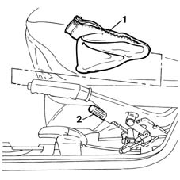
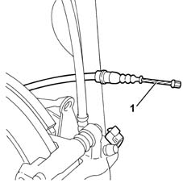
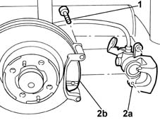
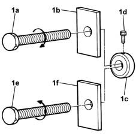
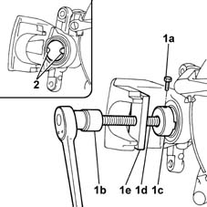

3310B60 rear brake pads - replace - includes handbrake adjustment if necessary
- Path
- Procedures > 33 BRAKING SYSTEM > 3310 DISC BRAKES > 3310B REAR DISC BRAKES > 3310B60 rear brake pads - replace - includes handbrake adjustment if necessary
- Kind
- repair procedure (removal / refitting; the operation number is the code)
- Applies to
- all engines; all production periods
- Interactive page
- https://sloeber94.github.io/elrnDB-fMltpl/en/#/2891591
Applies to: all engines; production: da 09/03, da 04/02 a 08/03
 Removing
Removing
 Refitting
RefittingPlace the car on the ramp.
Disconnect the battery negative terminal.
 | Name | Connector |
|---|---|---|
- | Battery |
1. Working from inside the vehicle, remove the protective boot for the handbrake lever.
2. Loosen the adjustment nut for the handbrake cable.

Applies to: all engines; production: da 09/03, da 04/02 a 08/03
1. Disconnect the handbrake cable from its seating on the rear caliper.

Applies to: all engines; production: da 09/03, da 04/02 a 08/03
1. Undo the bolts securing the rear caliper to the bracket.
2. Move aside the rear brake caliper (2a) from the brackets and remove the brake pads (2b).

Applies to: all engines; all production periods
Refitting
RemovingUse the appropriate tool to move the rear brake caliper cylinder back.
1. Tighten the bolt (1a) to the bracket (1b) with a right hand thread, then insert the tool (1c) and fasten it using the bolt (1d). The tool created in this way should only be used on the right rear brake caliper, tightening it in a clockwise direction to retract the brake caliper cylinder. Tighten the bolt (1e) to the bracket (1f) with a left hand thread, then insert the tool (1c) and secure it using the bolt (1d). The tool created in this way should only be used on the left rear brake caliper, tightening it in an anti-clockwise direction to retract the brake caliper cylinder.
 | Name | Country |
|---|---|---|
1c | Key | 1.870.886.000 |

Applies to: all engines; all production periods
1. With the brake caliper cylinder fully retracted, undo the bolt (1a) then, using a spanner (1b), undo the tool (1c) complete with bolt (1d) and bracket (1e).
2. Make sure that the splining on the brake caliper cylinder is in a horizontal position to allow the subsequent matching of the reference on the brake pad with the actual brake caliper cylinder.

Applies to: all engines; all production periods
Fit the brake pads in the brake caliper.
Fit the rear brake caliper to the disc.
Tighten the bolts that secure the rear caliper to the bracket to torque.
 | Fastening | Component | Ø | Value (daNm) |
|---|---|---|---|---|
- | Bolt | REAR BRAKE PADS | M10 | 3.3 |
Connect the handbrake cable to the rear brake caliper unit.
3380A04 handbrake - check travel
Connect the battery negative terminal.
| Name | Connector |
|---|---|---|
- | Battery |
Remove the car from the ramps.